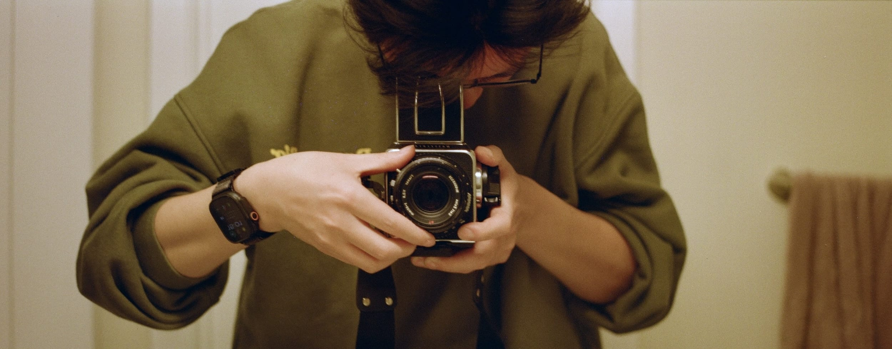

I am 郑昊天 Haotian Zheng (alias JustZht / JustinFincher in earlier years on the Internet). Born in 97, currently living in the San Francisco Bay Area, California. I work on Apple software, occasionally make my own apps and games, and for the rest of the time, tinker with blogs, cameras, cars, and whatever comes next.
Links
Blog · Instagram · Twitter · GitHub · Unsplash · LinkedIn · Mastodon · YouTube · Spotify · Douban · Dribbble
Currently doing
Working on Mac UI Frameworks (SwiftUI / AppKit).
Cruising around and snapping pictures aimlessly.
Scanning my films on an old Nikon Coolscan.
Probably drinking mules.
Humble brag
- Presented WWDC sessions 2x, Compose advanced graphics effects with SwiftUIWWDC26 and Tailor macOS windows with SwiftUIWWDC24. Pretty proud of my ending skits.
- Drove from Red Ball Garage in New York to The Portofino Hotel in Los Angeles in 59 hours, covering 2,826 miles in a poor rental Mazda. The postmortem. Slow cannonball is still a cannonball, just saying.
- 43 million views and 32 front page featured photos on Unsplash, and counting. Feel free to download those as your wallpapers.
- In my school days, won the WWDC scholarship 3x, with a low-code node editorWWDC22, a shader node editorWWDC20, and a golf gameWWDC18. Node editors for life.
- Also in my school days, made the #1 paid appJan 2018 on Google Play, featured by The Verge, Lifehacker, and The Next Web. And people didn't realize it was a Unity3D-powered live wallpaper until their phones got hot.
- Been writing my blog, EchoChamber, as a diary for the past 12 years. Some posts were printed into real hardcovers, 2 volumes now. Who doesn't want an ISBN number for their life?
Handy stuff
Code: SwiftUI, AppKit, Android, Vue.js, GLSL
Visual: Sketch, Unity3D, After Effects, FCPX, MODO, Cinema 4D
Cameras: Contax T3, Mamiya 6, Nikon F5, Minolta CL, and some more
Jobs
Apple 2022~
rct studio 2018
RavenTech / Baidu 2016–2017
Studios
FinGameWorks 2015~
NodeX 2015–2018
Journeys
Carnegie Mellon University 2021–2022
Central South University 2014–2019
Hefei No.1 Senior High School 2011–2014
Works
Download my resume.
For fun personal projects, check out online portfolio (or PDF slides).
Contact
justzht+sayhi@gmail.com
or anywhere else, as long as the ID is @JustZht.